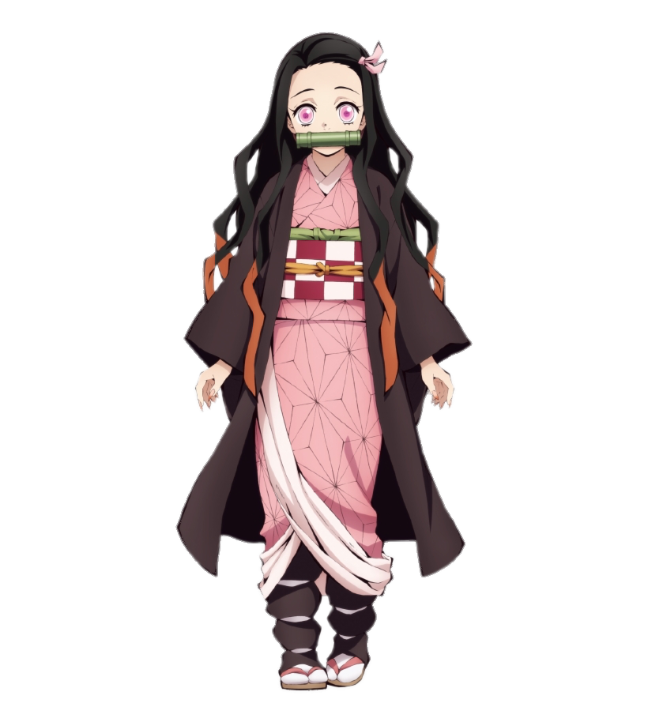
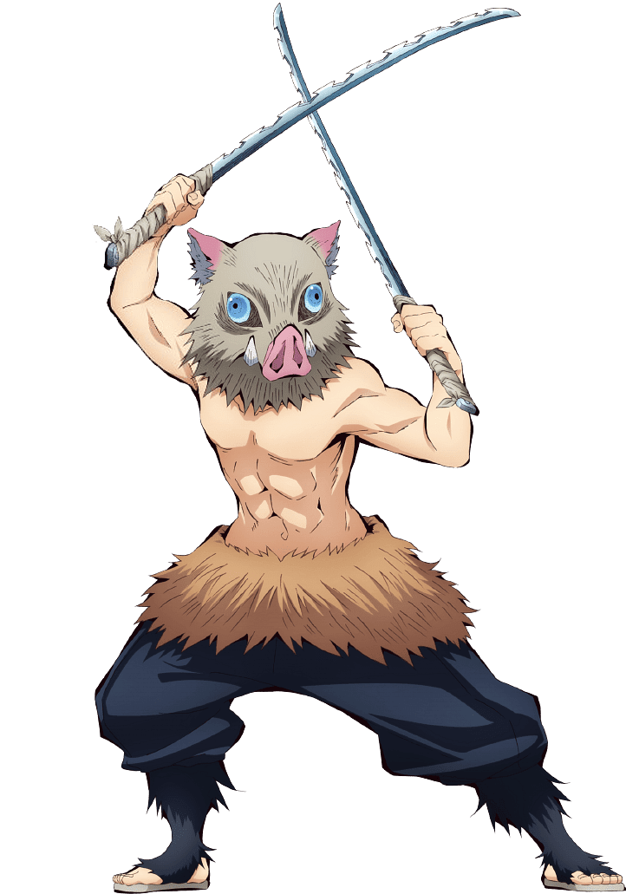
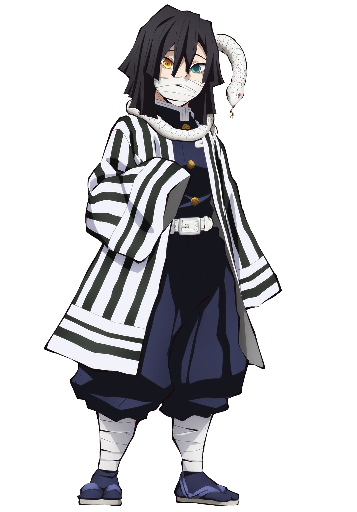

Giyuu
Water Hashira
Giyu Tomioka (冨とみ岡おか 義ぎ勇ゆう Tomioka Giyū?) is a major supporting character of Demon
Slayer: Kimetsu no Yaiba. He is a Demon Slayer of the Demon Slayer Corps and the current Water Hashira
(水みず柱ばしら Mizu Bashira?).

Nezuko
Demon
Nezuko Kamado (竈門かまど 禰ね豆ず子こ Kamado Nezuko?) is the deuteragonist of Demon Slayer: Kimetsu
no Yaiba. She is a demon and the younger sister of Tanjiro Kamado and one of the two remaining members
of the Kamado family. Formerly a human, she was attacked and transformed into a demon by Muzan
Kibutsuji.

Inosuke
Beast
Inosuke Hashibira (嘴はし平びら 伊い之の助すけ Hashibira Inosuke?) is one of the main characters of
Demon Slayer: Kimetsu no Yaiba and along with Zenitsu Agatsuma, a traveling companion of Tanjiro Kamado
and Nezuko Kamado. He is also a Demon Slayer in the Demon Slayer Corps.

Obanai
Snake Hashira
Obanai Iguro (伊い黒ぐろ 小お芭ば内ない Iguro Obanai?) is a major supporting character of Demon
Slayer: Kimetsu no Yaiba. He is a Demon Slayer of the Demon Slayer Corps and the current Serpent Hashira
(蛇へび柱ばしら Hebi Bashira?).

Shinobu
Insect Hashira
Shinobu Kocho (胡こ蝶ちょう しのぶ Kochō Shinobu?) is a major supporting character of Demon
Slayer: Kimetsu no Yaiba. She is a Demon Slayer of the Demon Slayer Corps and the current Insect Hashira
(蟲むし柱ばしら Mushi Bashira?).